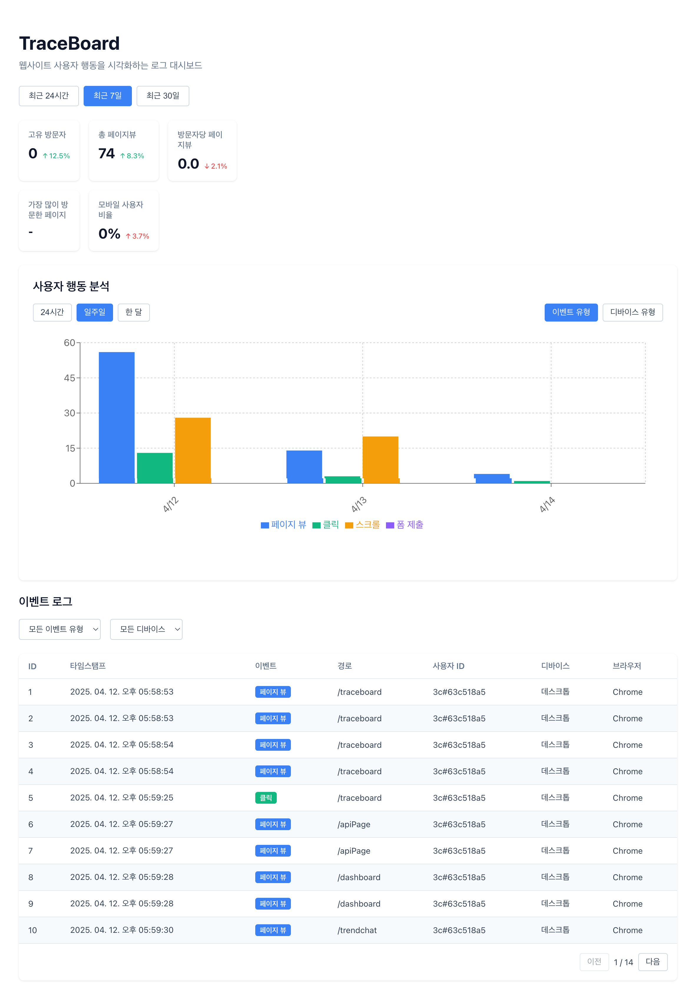
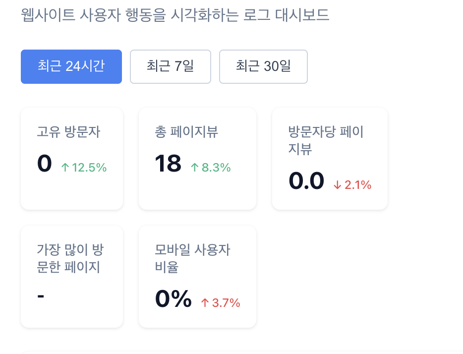
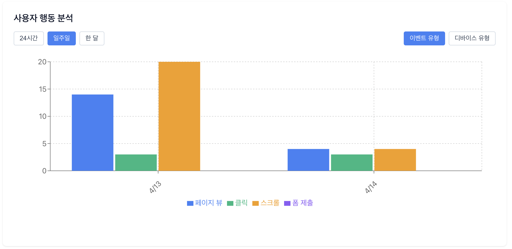
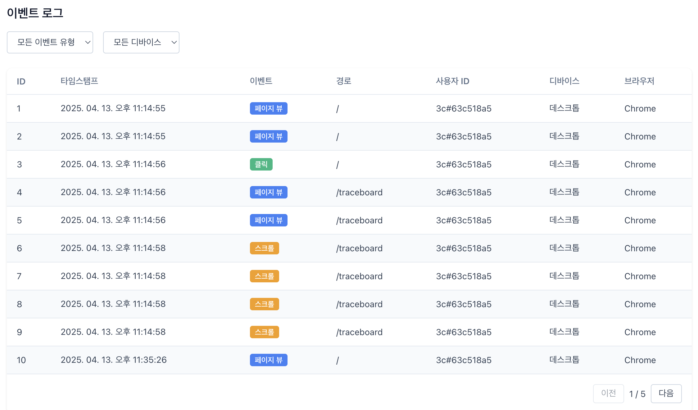

웹사이트 분석을 위한 새로운 솔루션 - DevZip 트레이스보드
2025.04.14 (MON)
💡 TL;DR: 트레이스보드는 DevZip 플랫폼의 웹 분석 도구로, 구글 애널리틱스보다 가볍고 개발자 친화적인 인터페이스를 제공합니다. 몇 줄의 코드로 설치 가능하며 사용자 행동을 실시간으로 추적하고 개인정보 보호 규정을 준수합니다.

트레이스보드 대시보드 화면: 직관적인 인터페이스로 주요 지표를 한눈에 확인할 수 있습니다.
왜 트레이스보드인가?
웹 사이트의 방문자 트래픽과 행동을 분석하는 것은 서비스 개선에 필수적입니다. 하지만 기존 분석 도구들은 복잡하거나, 무겁거나, 개인정보 이슈가 있었죠. DevZip 트레이스보드는 이러한 문제를 해결하기 위해 개발되었습니다.
트레이스보드의 핵심 장점:
- 가벼움: 웹사이트 성능에 미치는 영향 최소화 (페이지 로딩 속도 유지)
- 개발자 친화적: API를 통한 맞춤형 통합 가능
- 간편한 설치: 단 두 줄의 코드로 설치 완료
- 개인정보 보호: IP 주소 등 민감 정보 마스킹 처리
- 실시간 분석: 사용자 행동을 즉시 확인 가능
어떤 데이터를 볼 수 있나요?
트레이스보드는 크게 세 가지 영역의 데이터를 제공합니다:
1. 방문자 지표
 방문자 수, 페이지뷰, 세션 시간 등의 기본 지표
- 고유 방문자 수 (일간/주간/월간)
- 총 페이지뷰 수
- 방문자당 평균 페이지뷰
- 평균 세션 지속 시간
- 이탈률
2. 사용자 행동 차트
 이벤트 유형과 디바이스별 분포를 시각화한 차트
트레이스보드는 아래 데이터를 직관적인 차트로 시각화합니다:
- 이벤트 유형별 분포 (페이지뷰, 클릭, 스크롤, 폼 제출)
- 디바이스 유형별 분포 (모바일, 태블릿, 데스크톱)
- 브라우저별 사용 현황
- 시간대별/요일별 방문 패턴
3. 실시간 이벤트 로그
 실시간으로 발생하는 모든 사용자 활동을 시간순으로 기록
이벤트 로그에서는 다음 정보를 실시간으로 확인할 수 있습니다:
- 이벤트 발생 시간
- 이벤트 유형 (페이지뷰, 클릭 등)
- 페이지 경로
- 마스킹 처리된 사용자 ID
- 디바이스 및 브라우저 정보
활용 사례
DevZip은 자사 웹사이트에 트레이스보드를 적용한 후 측정(기대)되는 성과입니다.
주요 성과:
- 이탈률 n% 감소: 문제 페이지를 발견하고 개선
- 페이지 로딩 n% 개선: 사용자 행동 패턴에 따른 리소스 우선순위 조정
- 전환율 n% 증가: 폼 제출 과정의 병목 지점 개선
앞으로 추가될 기능
트레이스보드를 계속 발전시키고 있습니다. 곧 출시될 기능들은:
- 사용자 세션 리플레이 (익명화)
- 클릭 및 스크롤 히트맵
- A/B 테스트 내장 도구
- AI 기반 인사이트 및 개선 제안
지금 바로 시작하세요
궁금한 점이나 도움이 필요하신가요? 질문이나 피드백은 momo990305@gmail.com으로 보내주세요. 트레이스보드로 여러분의 웹사이트를 더욱 스마트하게 운영하세요! 🚀